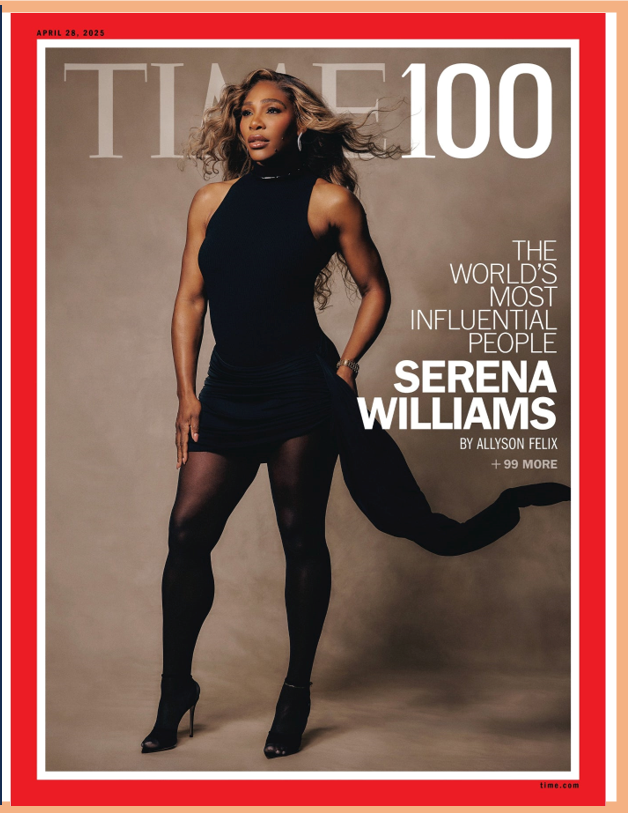

Patrimoine et affaires
Sa fortune atteint environ 350 millions de dollars en 2026. Outre ses 95 millions de gains en tournois et ses contrats (Nike, Wilson), elle dirige le fonds Serena Ventures (plus de 100 startups financées), une société de production et détient des parts dans les Miami Dolphins et l'Angel City FC.
Engagements sociaux
Elle milite activement pour réduire la mortalité maternelle chez les femmes noires aux États-Unis, finance en priorité des entreprises créées par des femmes et des minorités via Serena Ventures, et soutient l'éducation au Kenya ainsi que la justice sociale.

Entre Drake et Kendrick Lamar
Après une relation médiatisée avec Drake (2011–2015) suivie de tensions musicales où le rappeur a attaqué son mari, Serena a trouvé un allié naturel en Kendrick Lamar, originaire comme elle de Compton. Lors du Super Bowl LIX (2025), elle a dansé le Crip Walk sur le titre « Not Like Us » de Kendrick, transformant une ancienne polémique raciste en triomphe culturel.